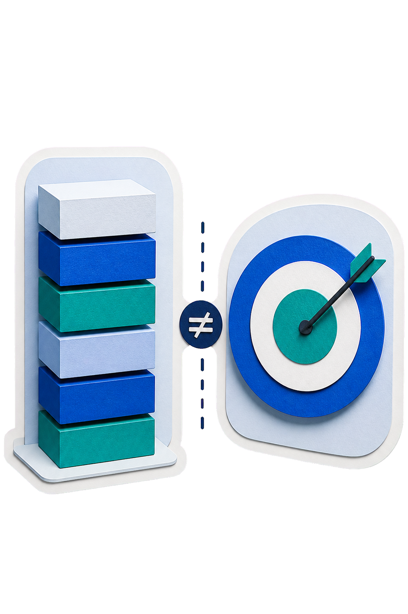
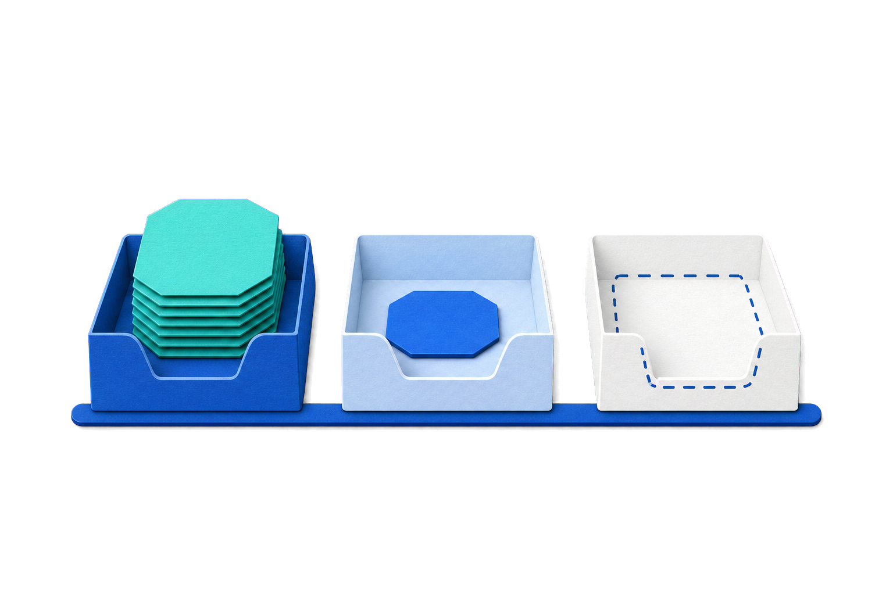
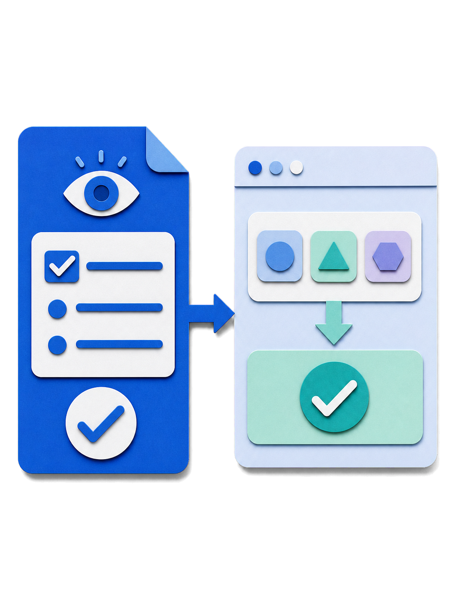
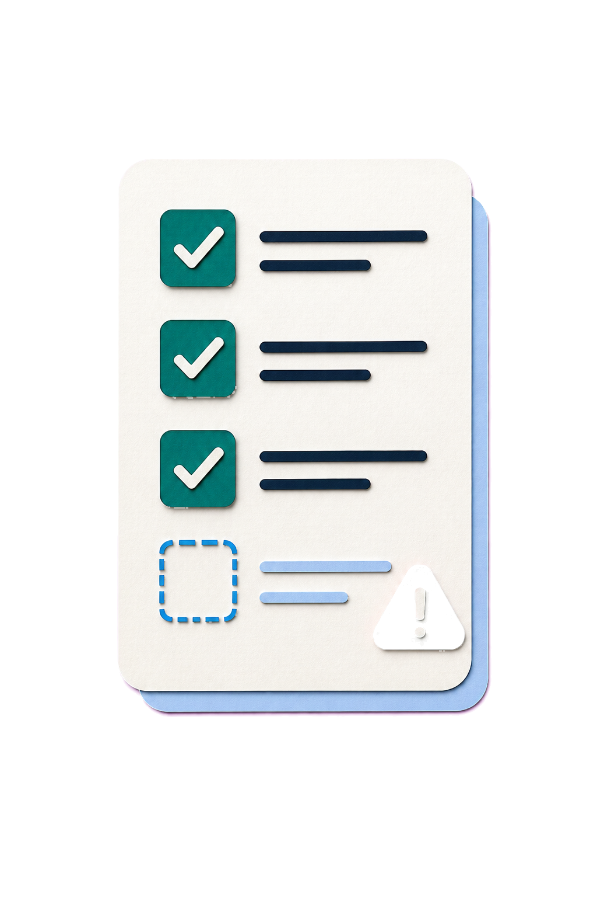
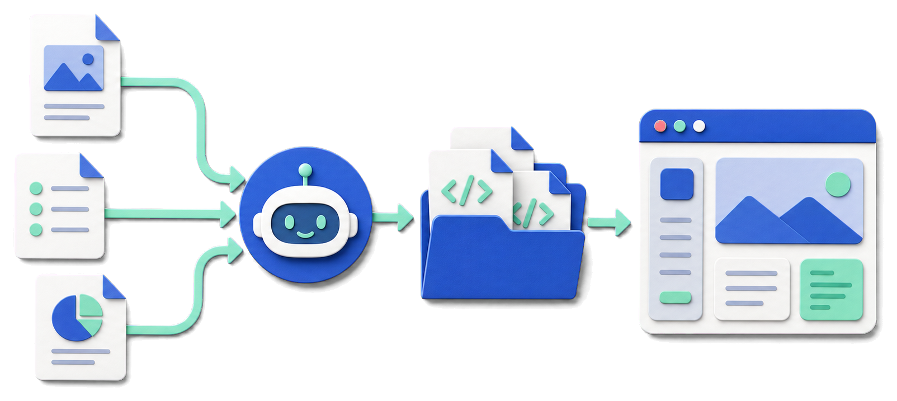
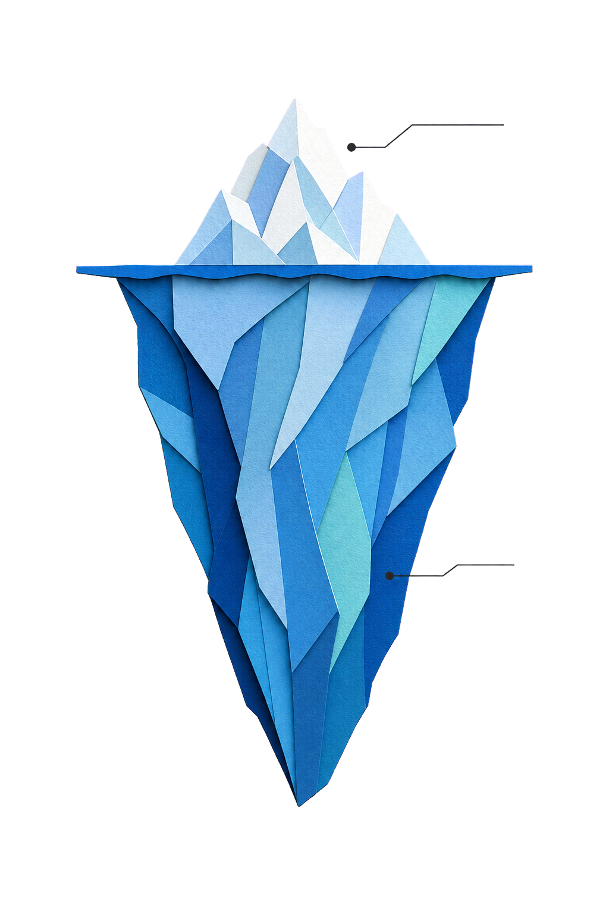
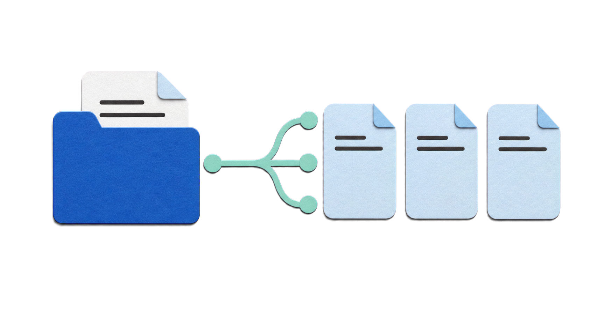
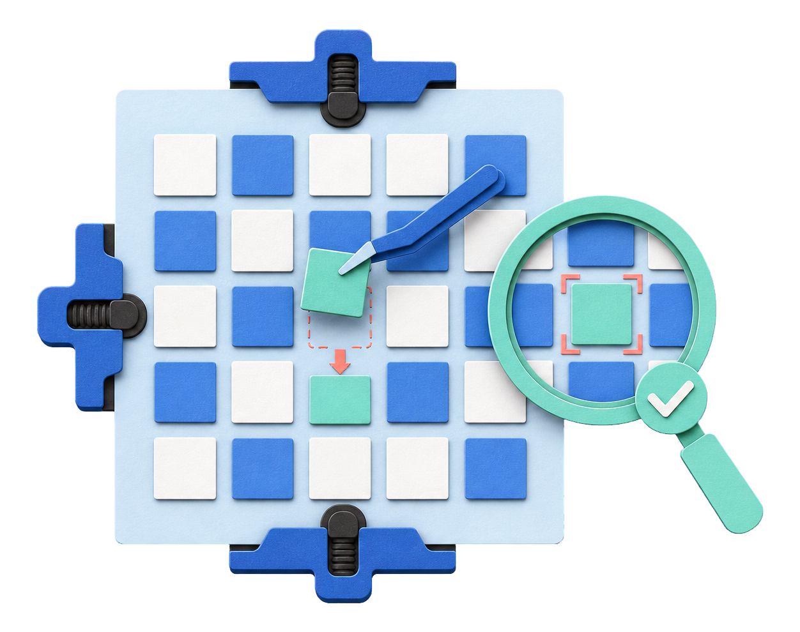
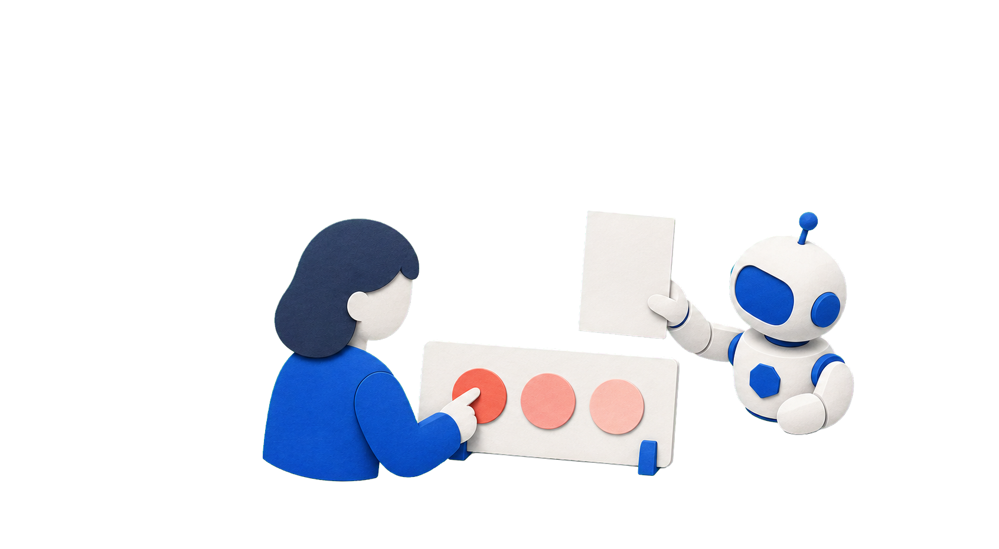

1
기준 쓰기
prd.md · design.md · AGENTS.md 세 문서를 내 폴더에 만듭니다.
오늘(2차시)의 목표
prd.md · design.md · AGENTS.md 세 문서를 내 폴더에 만듭니다.
세 문서를 읽혀 index.html · style.css · script.js 세 파일로 나를 소개하는 웹사이트를 만듭니다.
바꾸고 싶은 점은 문서를 먼저 고치고, 그다음 사이트에 적용합니다.
대화창이 아니라 폴더에 남은 파일이 오늘의 결과입니다.
기준을 파일로 남기고 AI에게 일을 맡기는 방법을 배우고, 나를 소개하는 웹사이트를 만들어 넓혀 봅니다.
1차시와 다른 점1차시는 «말로 바로», 2차시는 «기준 먼저»입니다.
PART
1차시에 무엇을 했고, 2차시에는 그 고리 앞에 무엇이 더 붙는지 봅니다.
1차시에 한 것 — 말로 요청해 타자 게임을 만들고, 브라우저로 열고, 한 가지씩 고쳤습니다.
함께 떠올려 볼 것
대화가 길어지며 앞에서 말한 조건을 한 번 더 적어야 했던 순간
같은 요청인데 다른 수강생과 화면이 달랐던 순간
원하는 색·크기·배치를 말로만 전하려던 순간
이 순간들을 줄이는 방법이 2차시의 주제입니다.
고리는 그대로입니다. 앞에 기준 결정이 붙고, 결정을 파일로 남기는 단계가 늘었습니다.
요청 → 확인 → 수정

기준 결정 → 요청 → 확인 → 수정

새로 배우는 게 아니라, 맨 앞에 결정 한 칸이 늘어납니다.
해줘.
해.
PART
무엇을, 어디까지, 무엇이 되면 끝인가 — 요청에 담을 것, 함께 넘길 것, 파일로 남길 것을 봅니다.
Prompt Engineering은 AI에게 어떤 요청을 어떻게 전달할지 설계하는 방법입니다. 다섯 칸을 채우면 AI가 추측할 빈칸이 줄어듭니다.
index.html · style.css · script.js 세 파일무엇을 지시할 것인가?
점검표로 쓰기네 원칙은 앞 장의 다섯 칸을 채운 뒤 빠진 것이 없는지 보는 체크리스트입니다.
AI에게 전달하는 작업 · 목표 · 조건 · 출력형식을 명확하게 설계합니다.
원하는 결과를 구체적으로 설명할 것
AI가 어떤 역할로 응답할지 지정할 것
핵심 조건을 구체적으로 제공할 것
형식 · 길이 · 스타일을 명시할 것
“자기소개 페이지 만들어줘”
자기소개 사이트 만들어줘.
나를 처음 알게 된 사람이 볼 자기소개 웹사이트를 만들어 주세요.목표 이름 · 한 줄 소개 · 관심사 2~3개만 한 페이지에 보여 주세요.범위 제가 주지 않은 경력 · 연락처는 만들지 마세요.조건 index.html · style.css · script.js 세 파일로 만들어 주세요.출력 브라우저에서 세 가지가 모두 보이면 끝입니다.완료 기준
AI에게 일을 시키기 전에, AI에게 그 일을 시킬 문장을 먼저 써 달라고 합니다.
한 번뿐인 질문은 바로 시키고, 반복해서 쓸 지시는 프롬프트부터 받아 둡니다.
긴 문맥(Context)을 처리할 때,
입력의 시작과 끝은 잘 기억하지만
중간에 위치한 정보는 누락하거나 제대로 활용하지 못하는 현상입니다.
가운데 구간중요한 자료가 가운데에 있으면, 자료를 아예 주지 않았을 때보다 못한 결과가 나오기도 합니다.
그래서 꼭 지킬 조건은 요청의 맨 앞이나 맨 뒤에 두고, 길어지면 한 번 더 적습니다.
gpt-3.5-turbo-0613문서를 하나도 주지 않았을 때 56.1
앞 장의 «중간 유실»이 긴 대화에서 실제로 무엇을 잃게 하는지입니다.
긴 대화나 장기 작업에서 처음에 전달한 요구사항이나 조건이 약해지거나 누락될 수 있습니다.
처음 조건: 관심사 2~3개만 · 경력 지어내지 않기
요청 · 답변
수정 요청 · 답변
또 수정 요청이 계속 쌓임
예: 관심사가 다섯 개로 늘어남
예: 쓰지 않은 경력 문장이 섞임
기준 문서 (.md)
관심사 2~3개 · 경력 지어내지 않기
요청할 때마다 다시 읽힘
Context
Context Engineering은 AI가 필요한 정보를 제대로 참고하도록 맥락을 구성하는 방법입니다. 같은 요청이라도 함께 넘긴 자료만큼 결과가 달라집니다.
무엇을 만드는 중인가
요구사항 · 기존 문서 · 참고 자료
지켜야 할 작업 규칙
실패했을 때 나온 그대로
무엇을 제공할 것인가?
AI의 더 유용한 답변을 위해 배경정보 · 참고자료 · 판단기준 · 제약조건을 함께 제공해 맥락을 설계합니다.
지시를 다듬는 것만으로는 부족합니다.
이 요청이 왜 필요한지 목적과 상황을 줄 것
참조할 문서 · 데이터 · 관련 정보를 줄 것
어떤 기준으로 볼지 명확하게 줄 것
하지 말아야 할 것과 지킬 형식을 줄 것
“자기소개 페이지 예쁘게 만들어줘”
채팅 하나하나가 하나의 세션입니다. 새 세션을 열면 AI는 이전 세션에서 정한 것을 모릅니다. 결정이 그 세션의 컨텍스트(그 대화 안에서만 오간 맥락) 안에만 있었기 때문입니다.
맥락 (Context)지금 대화에 실제로 들어온 정보입니다.
메모리 (Memory)다음에도 참고하도록 남긴 정보입니다. 모든 대화를 자동으로 기억하는 기능이 아닙니다.
새 대화를 열 때마다 처음부터 다시 설명합니다
다음 대화가 그 파일을 읽고 이어갑니다
대화는 흘러가고, 결정은 문서로 남깁니다.
회의록처럼회의 잡담은 기억나도 회의록이 없으면 다음 날 다시 회의합니다. 채팅은 위로 밀려 사라지니, 지킬 기준은 문서에 남깁니다.
범위 · 순서 · 증거 · 멈춤 같은 약속은 프롬프트 한 줄보다 큰 바깥 구조에 놓입니다.
프롬프트가 컨텍스트 안에, 컨텍스트가 하네스 안에 들어 있습니다.
이 틀을 설계하는 일을 하네스 엔지니어링이라고 합니다 — AI가 일하는 동안 환경 · 도구 · 규칙 · 확인 구조를 설계하는 일.
하네스가 왜 필요한가 — 모델이 스스로 못 하는 세 가지
“이제 프롬프트는 필요 없다”는 말은 정확하지 않습니다. 없어진 게 아니라 가장 안쪽 자리로 들어간 것입니다.
하네스라는 이름의 비유
마구(馬具)는 말의 힘을 줄이는 장치가 아니라, 힘을 수레 · 도구 · 목적지와 연결하는 장치입니다.
말 → 마구 · 고삐 → 수레 · 도구 → 확인 문
하네스 엔지니어링도 AI를 묶는 일이 아니라, AI의 힘이 제대로 일로 이어지도록 환경을 설계하는 일입니다.

재갈 · 고삐 = AI가 따라야 할 규칙과 권한
이 과정에서는 이 장 뒤로 하네스를 «AI에게 일을 맡기는 틀»이라고 쉽게 부릅니다.
Markdown
텍스트에 약속된 기호로 문서 구조를 표시하는 가벼운 문서 형식입니다.
일반 텍스트와 달리 특정 기호가 정해진 서식(제목 · 굵게 · 목록)으로 바뀝니다.
문서에 쓰인 기호 10개
| 기호 | 화면에서 되는 것 |
|---|---|
# | 제목 |
## | 소제목 |
**굵게** | 강조 |
- | 목록 |
- [ ] | 할 일(미완료) |
- [x] | 할 일(완료) |
> | 인용 |
--- | 구분선 |
[글](주소) | 링크 |
``` | 코드 블록 |
파일 이름 읽기prd.md의 .md는 Markdown으로 쓴 문서라는 표시입니다(1차시에 index.html의 .html을 읽은 것과 같은 방식).
나를 소개하는 사이트 메모
꼭 보여 줄 것
처음 만난 사람을 위한 소개
AI 초안은 사람이 다시 확인
대화에만 말한 기준은 창을 닫으면 사라지지만, 파일에 적은 기준은 다음 실행에서 다시 읽힙니다.
새 대화를 열거나 대화가 길어지면 기준이 약해집니다. 매번 다시 설명해야 합니다.
실행할 때마다 처음부터 다시 읽힙니다. 나도 Codex도 같은 기준을 봅니다.
PART
누가 볼지 · 무엇을 꼭 넣을지 · 어떤 순서로 보여 줄지 · 무엇이 되면 끝인지를, 문서에 적기 전에 정합니다.
웹서비스 제작 과정
사용자가 겪는 문제와 만들 결과의 목표를 정합니다. 여행 전 어디로 갈지 정하는 여행 계획과 같습니다.
필요한 정보의 순서와 화면 구조를 미리 그립니다. 요리를 어떤 그릇에 담을지 정하는 플레이팅과 같습니다.
HTML · CSS · JavaScript로 보이는 화면과 반응을 만듭니다. 완성한 요리를 손님 앞에 그대로 내어놓는 것과 같습니다.
입력한 데이터를 저장하고 서비스 규칙대로 처리합니다. 주방과 창고와 같습니다.
요청한 기능이 맞는지 확인하고 발견한 오류를 고칩니다. 거울 앞 매무새를 마지막으로 점검하는 것과 같습니다.
사용자의 반응과 문제를 살펴 다음 개선으로 이어 갑니다.
4 백엔드는 이 과정에서 다루지 않습니다.
타깃을 좁힐수록 넣을 내용도, 보여 줄 순서도 또렷해집니다.
모임에서 처음 만난 사람이 인사 뒤에 내 관심사를 알 수 있게 돕는 소개 사이트
“세상을 바꿀 열정 가득한 나”처럼 멋진 홍보 문구
택배 송장처럼 — 한 줄 정의는 슬로건이 아니라 «무엇을 만들지» 좁히는 제작 기준입니다. 광고 문구가 아니라 송장입니다.
넓은 생각을 세 질문으로 좁힙니다“자기소개 사이트”
세 질문에 답하면 사이트가 무엇을 먼저 보여 줘야 하는지가 드러납니다.
결과 = 방문자가 얻는 변화 · 기능 = 사이트가 하는 동작
멋진 효과를 다섯 개 넣어도 방문자가 나를 기억하지 못하면 결과는 0입니다
기능은 ‘만든 것’, 결과는 ‘그것이 일으킨 변화’ — 기능이 있어도 결과가 없을 수 있습니다
결과 하나를 정하면 기능도 작아집니다.

가설을 확인하려고 범위를 의도적으로 줄인 첫 작동 버전
기능 수를 줄인 것이지 품질을 낮춘 것이 아닙니다.
첫 버전에 꼭 넣을 섹션만 먼저 만들고, 나머지는 나중으로 미룹니다.
꼭 필요한 짐만 먼저 풉니다. 집 전체를 한 번에 완성하지 않습니다.
이름 또는 활동명
한 줄 소개
관심사
“무엇을 만들까?”보다
“방문자가 다 보고 나서 무엇을 알게 할까?”를 먼저 정합니다.
그 결과를 만드는 섹션과 반응 하나만 이번 버전에 넣습니다.
방문자가 마지막에 보는 장면이 결과, 거기까지 가는 동작이 기능입니다.
없으면 소개가 성립하지 않는 것
예: 이름 · 한 줄 소개 · 관심사
없어도 소개가 유지되는 것
예: 사진 모음 · 로그인 · 공유 버튼
이번엔 필수 섹션만 만듭니다.
버리는 게 아니라 보관합니다 — 떠오른 섹션은 일단 주차장에 세워 둡니다.
필수 섹션과 반응 하나
로그인 · 공유 · 서버 저장
다음에 더할 것. 기능을 버리는 것이 아니라 미룹니다.
무엇을 누르면 무엇이 보이는지 문장으로 적습니다.
예: “관심사 보기를 누르면 관심사 2~3개가 보인다.”
반례 — 다 넣으면 무엇이 끝났는지 모릅니다.
여행 가방처럼 — 무게 제한이 있어야 가방이 닫힙니다. ‘안 만들 것’을 정해야 끝이 납니다.

User Flow — 방문자가 한 가지 목표를 이루려 무엇을 보고 → 무엇을 누르고 → 무엇을 알게 되는지의 순서
화면의 모든 요소가 아니라 대표 한 길을 먼저 그립니다.
지하철 노선도처럼 — 전체 노선도가 아니라 내가 매일 타는 한 경로만 그립니다.
소개 사이트는 대부분 읽는 화면입니다. 네 요소는 반응하는 곳(버튼)에서만 봅니다.
하나라도 말하지 못하면 그 반응은 아직 흐린 것입니다.
| 완료 기준 | 확인 가능한 장면(무엇을 누르면 무엇이 보인다) |
|---|---|
| 테스트 | 정상 · 다른 · 빈값으로 확인하는 방법 |
| 나쁜 예 | “잘 작동한다” |
| 좋은 예 | “관심사 보기를 누르면 관심사 2~3개가 보인다” |
채점표는 시험 전에채점표가 시험 뒤에 생기면 모두가 억울합니다. 만들기 전에 채점표를 만듭니다.
확인할 수 없는 요구사항은 쓸모가 없습니다‘잘’은 사람마다 기준이 달라 O/X가 나지 않습니다.

이름 또는 활동명 · 한 줄 소개 · 관심사 2~3개가 보이고, 글자가 잘리거나 밀리지 않는지 확인합니다.
내가 주지 않은 정보내가 주지 않은 경력 · 연락처가 새로 만들어지지 않았는지도 함께 봅니다.
문서에 미리 적기이 검수 항목은 뒤에서 prd.md의 «완료 기준»에 그대로 옮겨 적습니다.
PRD(제품 요구사항 문서)는 무엇을 왜 만드는지 적어 팀에 방향을 알리는 기획 문서입니다.
PRD · 기획서Product Requirements Document

prd.md · AI가 읽는 기획서폴더에 두는 Markdown 파일
PRD(개념)≠prd.md(우리의 최소 기준 문서)
다섯 항목 가운데 하나라도 비워 두면, 그 자리를 AI가 추측으로 메웁니다.
빈칸은 AI의 추측이 됩니다. 문서는 최소로 시작해 갱신합니다 — 길게 쓰는 것이 목표가 아닙니다.

레퍼런스란 우리 화면을 만들 때 참고하는 다른 서비스 · 화면입니다. 그대로 베끼는 자료가 아니라, 왜 그렇게 만들었는지 뜯어보는 관찰 대상입니다.
통째로 복제하지 않기
↓
색 · 여백 · 글자 · 정보 순서를 관찰하기
↓
무엇을 참고할지 · 무엇은 안 따라 할지도 정하기
검색해서 나온다고 무료가 아닙니다 — 이미지 · 글꼴은 출처와 사용 조건을 먼저 확인합니다.
표현은 옮기지 않습니다 — 저작권은 아이디어 · 방식이 아니라 표현을 보호합니다. ‘넓은 여백’ 같은 방향은 참고해도, 문구 · 이미지 · 화면을 그대로 옮기면 침해가 될 수 있습니다.

PART
기획에서 정한 것을 세 문서로 나눠 내 사이트 폴더에 남깁니다.
세 문서는 각각 다른 질문에 답합니다. 책임이 겹치면 나중에 어디를 고칠지 헷갈립니다.
무엇을 만드나
“이 사이트는 무엇을 보여 주나요?”
어떻게 보이나
“버튼은 무슨 색인가요?”
어떻게 일하나
“고친 뒤에는 무엇을 확인하나요?”
이 PART에서 세 문서를 모두 직접 만듭니다.
무엇을 만들지, 어떻게 보일지, 어떻게 일할지를 파일로 나눠 두고 AI에게 읽힙니다.

앞 PART의 다섯 항목만 빠짐없이 채우면 됩니다. 길이가 아니라 항목이 기준입니다. 프로젝트가 커지면 같은 다섯 항목이어도 길어집니다.
에이전트가 prd.md를 읽고 무엇을 만들지 파악합니다.대상 · 핵심 · 흐름을 먼저 확인합니다.
만든 결과를 prd.md 기준과 맞춰 봅니다.제외 · 완료 항목까지 지켰는지 확인합니다.
즉 prd.md는 에이전트가 시작하기 전과 끝난 뒤 두 번 참고하는 기준 문서입니다.
이 제목이 맡는 항목
새 프로젝트 폴더
실제 화면 캡처가 이 자리에 들어갑니다.
1차시 typing_game에 이어 쓰지 않고, C:\VibeCoding 안에 새 폴더 about_me를 만듭니다.
C:\VibeCoding\about_me\
1차시와 같은 방법으로 이 폴더를 작업 폴더로 엽니다.
Codex에 표시된 현재 작업 폴더 이름이 about_me인지 확인합니다. 다르면 요청을 보내지 않습니다.
세 문서와 사이트 세 파일이 모두 이 폴더 안에 생깁니다.
완료 기준 — prd.md를 열었을 때 소제목 다섯 개 아래가 모두 채워져 있고, 내가 바꾼 결정이 1개 이상 있습니다.
실제 화면 캡처가 이 자리에 들어갑니다.
이 폴더에 prd.md 초안을 만들려고 합니다.
대상 · 핵심 · 흐름 · 제외 · 완료를 하나씩 물어보고, 제 답을 모아 초안을 보여 주세요.
소제목은 다섯 개로 나눠 주세요.
제가 답하지 않은 내용은 만들지 말고, 모르는 것은 [확인 필요]로 남기세요.
아직 저장하지 마세요.
실제 화면 캡처가 이 자리에 들어갑니다.
하나씩 물어보게 하면 빈 항목이 남지 않습니다.
«[확인 필요]로 남기세요»가 지어낸 경력 · 연락처를 막고, «아직 저장하지 마세요»가 확인 전 저장을 막습니다.
저장 전에 내가 고친 줄이 1개 이상인지 봅니다. 그다음 “prd.md로 저장해 주세요”라고 요청합니다.
같은 요청, 다른 결과입니다. 차이는 기준을 넘겼는가뿐입니다.
선택
사용자가 보고 · 누르고 · 듣는, 서비스와 만나는 접점

UI · 보이는 일각UX · 경험 전체사용 전부터 사용 후까지 사용자가 겪는 모든 경험
빙산처럼 — UI는 빙산의 일각이고 UX는 수면 아래까지 이어지는 전체입니다.
반대말이 아닙니다 — UI는 UX 안에 포함된 접점입니다.
기본 순서서비스 설명 → 입력 · 선택 → 실행 → 결과 → 안내
소개 사이트에서는이름 → 한 줄 소개 → 관심사 보기 → 관심사 목록
아무것도 강조되지 않습니다.크기는 3단계 정도, 핵심 하나만 가장 크게 둡니다.
첫 화면에서 다음 행동을 짐작할 수 있어야 합니다.
버튼은 누른 뒤 무슨 일이 일어나는지 말해야 합니다.
엘리베이터처럼 — 버튼에 ‘3층 사무실’이라 적힌 것처럼, 버튼도 자기소개를 해야 합니다.
버튼과 입력칸마다 무엇인지 글자로 붙입니다.
상태나 안내는 색과 글자를 함께 씁니다.
글자와 배경은 충분한 대비로 둡니다.
신호등도 위치와 글자가 함께 있습니다.
대비 · 색 단독 금지 · 라벨만 지켜도 흔한 실패 대부분을 피합니다.
여러 화면이 같은 제품처럼 보이게 하는 반복 규칙
색 · 글자 · 여백 · 버튼 · 상태를 한 번 정해 반복합니다. 그래서 화면이 들쭉날쭉하지 않습니다.
옷장의 기본 3색처럼 — 한 번 정해 반복하는 것입니다. 대기업만 쓰는 것이 아니라 작은 사이트에도 도움이 됩니다.
담는 것
세 줄이면 충분합니다.
카페 알바생에게 남기는 ‘가게 규칙 메모’ 같은 것입니다. 나도 Codex도 같은 기준을 봅니다.
선택
강사 제공 디자인 방향
내 사이트에 맞는 방향 하나를 고릅니다. 고른 방향은 design.md의 «분위기» 줄에 그대로 적습니다.
선택
먼저 볼 것 · 다음 행동 · 확인할 것을 한 장에 적습니다.
화면을 만들기 전에 손가락으로 이동 경로를 그려 봅니다.
지킬 것을 두 줄 이상 직접 적습니다.
prd.md를 읽혀 기준 초안을 받습니다.
실제 화면 캡처가 이 자리에 들어갑니다.
화면 적용은 PART 5에서사이트가 아직 없으니 지금은 문서만 만들고, 사이트를 만든 뒤 최소 2가지를 화면에 적용합니다.
완료 기준design.md를 열었을 때 네 제목 아래가 채워져 있고, 내가 고친 줄이 있습니다.
이 폴더의 prd.md를 먼저 읽고 design.md 초안을 써 주세요.
· 목적: 이 사이트의 디자인 기준을 파일로 남기기
· 입력: prd.md와 제가 고른 분위기 [예: 친근한 안내]
· 출력: 순서 · 색 · 여백 · 문구 네 제목 아래 한 줄씩
· 검증: prd.md에 없는 섹션은 만들지 말고, 모르면 [확인 필요]로 남기기
초안만 보여 주세요. 한 줄은 제가 고친 뒤 저장합니다.
네 제목을 정해 주면 빠진 기준이 보입니다.
«검증» 줄이 지어낸 기준을 막습니다.
고친 초안을 design.md로 저장했는가.
PART 2에서 본 «바깥 틀» 안에 어떤 도구로, 어떤 행동을 하게 할지를 미리 정해 두는 것입니다.
이 네 문장이 이미 AI에게 일을 맡기는 틀입니다.사람이 매번 설명하지 않아도 장치가 확인하고 멈춥니다.
앞 장의 네 약속처럼 «맡기기 전에 주는 것»을 담는, 작업 전에 먼저 읽는 규칙 파일입니다.
실제 화면 캡처가 이 자리에 들어갑니다.
AI의 기억이 아니라, 사람이 적어 둔 만큼만 지키는 고정된 규칙입니다.
둘 다 «하지 마»라고 말하지만, 넘어갈 수 있느냐가 다릅니다.
| 규칙 파일 · AGENTS.md | 권한 · 승인 설정 | |
|---|---|---|
| 하는 일 | 지키도록 유도합니다 | 넘어갈 수 없게 강제합니다 |
| 어디에 있나 | 프로젝트 폴더 안 파일 | 도구의 승인·권한 설정 |
| 어길 수 있나 | 지시가 부딪히면 지나칠 수 있습니다 | 실행 자체가 멈추고 물어봅니다 |
| 기준 | 내가 적은 만큼 | 프로젝트 폴더가 경계 |
되돌릴 수 있으면 규칙, 되돌릴 수 없으면 권한으로 막습니다. «작업은 프로젝트 폴더 안에서»는 규칙이 아니라 권한이 막습니다.
프로젝트마다 다르지만, 이 세 종류를 적습니다.
한 문장이 한 줄입니다. 길게 설명하지 않고 지킬 것만 짧게 적습니다.
초안은 받아도 됩니다 내 폴더를 읽게 한 뒤 «이 형식대로 AGENTS.md를 채워 줘»라고 요청하고, 나온 초안에서 내가 고칠 줄만 고칩니다.
module · import · export · 로컬 fetch · 빌드 · 서버는 쓰지 않습니다.
브라우저로 파일을 직접 열 때(file://) 막히는 기능을 피하고, 모두 같은 출발선에 서기 위해서입니다.
제한은 실력을 줄이는 벽이 아니라 모두가 같은 출발선에 서게 하는 난간입니다.
이 제한은 «지켜야 할 규칙» 줄로 그대로 옮겨 적을 수 있습니다.
만들 것 — about_me 폴더의 AGENTS.md 6~10줄
고를 수 있는 규칙 — 정적 웹만 사용 · 서버 코드 금지 · 한 번에 하나만 수정 · 수정 후 재확인
“내 폴더를 읽고 뭐가 있고 뭐가 부족한지 알려 줘. 아직 고치지는 마.”
빈 문서에서 시작하지 않습니다.
여기서 내 프로젝트가 됩니다.
“만들었다”는 말은 증거가 아닙니다. 파일을 직접 열어 보고, 다음 요청에서 그 규칙을 실제로 지키는지 확인합니다.
실제 화면 캡처가 이 자리에 들어갑니다.
이 폴더를 먼저 읽고 무엇이 있고 없는지 알려 주세요. 아직 고치지 마세요.
[내 프로젝트] 만드는 것: [prd.md의 한 줄 정의] · 지켜야 할 규칙: [꼭 지켰으면 하는 것 하나]
· 먼저 읽을 자료: prd.md · design.md
· 반복할 절차: [예: 수정 뒤 브라우저에서 다시 확인]
그다음 이 형식으로 AGENTS.md 초안을 6~10줄로 써 주세요.
모르는 것은 [확인 필요]로 남기고, 저장은 제가 확인한 뒤에 합니다. 먼저 초안만 보여 주세요.
세 종류의 재료를 채우면 규칙 · 자료 · 절차가 내 프로젝트의 약속이 됩니다.
«[확인 필요]»가 없으면 모르는 내용을 그럴듯하게 지어낼 수 있습니다.
초안에서 내가 고친 줄이 최소 1개인지 확인한 뒤에만 저장합니다.
PART
세 문서를 먼저 읽히고, 계획을 확인한 뒤, 세 파일로 사이트를 만들어 브라우저에서 엽니다.
코드로 반복하지 말고 계획으로 반복합니다잘못 만든 코드를 되돌리는 것이 계획을 고치는 것보다 더 비쌉니다.
폴더 안 문서 = AI가 참고하는 맥락 — 목적 · 범위 · 완료가 문서에 있습니다.
코드 전에 “무슨 파일을 어떤 순서로” 계획부터 보여 달라 하고, 사람이 확인한 뒤 진행합니다.
계획부터 보여 주세요. 만들 파일과 순서만 짧게 알려 주시고, 제가 확인하기 전에는 파일을 만들지 마세요.
계획을 길게 만들라는 게 아니라 엉뚱한 파일을 줄이는 짧은 점검입니다.
실제 화면 캡처가 이 자리에 들어갑니다.
같은 문서라도 넘기는 방식에 따라 다음 대화에서 살아남는지가 갈립니다.
“이 폴더의 prd.md를 먼저 읽고 시작해 주세요.”
index.html 안에 구조 · 표현 · 반응을 함께 넣었습니다. 파일을 찾고 브라우저에서 여는 흐름을 단순하게 유지할 수 있었습니다.prd.md에 정리하고 HTML · CSS · JavaScript를 역할별로 나눠 연결합니다.
1차시에 한 파일로 시작한 것은 임시방편이 아니라, 그 목표에 맞춘 선택이었습니다.
코드가 커지면 역할별로 나눠야 고칠 때 그 파일만 엽니다.
+ 기준 문서prd.mddesign.mdAGENTS.md
index.html 하나만 열면 나머지가 함께 불려와 한 페이지가 됩니다.
숨바꼭질처럼 — 한 파일에 다 넣으면 처음엔 편하지만 나중에 어디를 고칠지 숨바꼭질이 시작됩니다.
우리는 index.html을 직접 엽니다 (주소가 file://로 시작).
파일을 만든 것과 작동하는 것은 다릅니다.
준비한 요청문을 Codex에 전달합니다.
다시 볼 것 — 문서 읽기 · 세 파일 · 필수 내용 · 제외 · 브라우저 열기 · 추가 설치 없음이 모두 적혔는지 봅니다.
요청 뒤에는 Codex의 작업 보고와 실제 파일을 다음 장에서 따로 확인합니다.
이 폴더의 prd.md와 AGENTS.md를 먼저 읽고 시작해 주세요. prd.md의 «핵심»과 «흐름»대로 나를 소개하는 웹사이트를 index.html · style.css · script.js 세 파일로 만들어 주세요. «만들지 않을 것»에 적힌 것은 붙이지 말고, prd.md에 없는 경력 · 연락처는 만들지 마세요. 설치 · 빌드 · 서버는 사용하지 말고, 브라우저에서 index.html을 직접 열 수 있게 해 주세요. 만들기 전에 어느 파일을 만들지 먼저 알려 주세요. 다 만들면 «완료 기준»과 맞는지 대조해서 알려 주세요.
prd.md를 기준으로 Codex가 index · style · script 세 파일을 최소로 만듭니다.
대표 흐름 하나로 버튼을 누르면 화면이 바뀌는 첫 작동을 확인합니다.
실제 화면 캡처가 이 자리에 들어갑니다.
브라우저에서 이름 또는 활동명 · 한 줄 소개 · 관심사 2~3개를 차례로 확인합니다.
한 줄 소개
C:\VibeCoding\about_me\ 바로 안에 index.html · style.css · script.js가 보이는지 봅니다. 하위 폴더에 들어가 있다면 바로 안으로 옮겨 달라고 요청합니다.외형보다 필수 내용과 실행을 먼저 확인합니다.
design.md에 적은 기준 가운데 2가지를 골라 실제 화면에 적용합니다. 문서만 만들고 끝내지 않습니다.
완성 고른 2가지가 화면에 반영되어 있고, 나머지 내용은 그대로입니다.
실제 화면 캡처가 이 자리에 들어갑니다.
이 폴더의 design.md를 먼저 읽어 주세요.
[내 판단] 이번에 바꾸고 싶은 곳: [화면의 어느 부분]
· 꼭 반영할 기준 2가지: [design.md에서 내가 고른 것]
· 절대 건드리지 말 것: [지금 마음에 드는 부분]
고른 2가지를 지금 화면에 적용해 주세요.
무엇을 · 어디에 적용했는지 파일 이름과 함께 알려 주세요.
휴대폰 폭으로 좁혀도 글자와 버튼이 화면 밖으로 나가지 않게 해 주세요.
design.md에 없는 기준은 만들지 말고, 모르는 것은 [확인 필요]로 남기세요.
바꿀 곳이 애매하면 고치지 말고 저에게 먼저 물어봐 주세요.
문서를 기준으로 삼게 해야 화면과 문서가 갈라지지 않습니다.
«건드리지 말 것»을 정해 두면 마음에 들던 부분이 같이 바뀌지 않습니다.
화면을 열어 2가지가 실제로 바뀌었는지 확인합니다.
한 번에 전부 완성하려 하지 말고, 화면 하나 · 동작 하나 · 확인 하나씩 이어 갑니다.
이름 · 한 줄 소개 · 관심사 영역의 자리를 먼저 잡습니다.
관심사 보기 버튼 하나로 관심사가 나타나게 합니다.
새로고침하고 버튼을 다시 눌러 같은 결과가 나오는지 봅니다.
PART
바꾸고 싶은 것이 생기면 사이트보다 문서를 먼저 고치고, 그 문서를 다시 읽혀 적용합니다.
코드만 바꾸면 다음 AI 작업이 낡은 기준을 다시 읽습니다. 문서부터 바꾸고 다시 확인합니다.
대상 · 섹션 · 제외 중 하나가 바뀌었다면 멈춥니다.
예: “관심사는 두 개만 보여 주자”→바뀐 결정을 prd.md(또는 design.md)의 해당 항목에 반영합니다.
→AI가 바뀐 문서를 읽은 뒤, 화면에서 반영을 확인합니다.
“prd.md를 다시 읽고 적용해 주세요”코드만 먼저 고치면 문서와 화면이 다른 약속을 합니다.
도면처럼 — 집을 고치기 전 도면부터 고칩니다.
prd.md에 적힌 한 줄 소개를 새 문장으로 직접 고치고 저장합니다.
한 줄 소개만 바꿔 달라고 요청하고, 이름 · 관심사 · 나머지 구성은 그대로 두라고 함께 적습니다.
수정 요청 3단무엇을 유지할지 → 무엇을 바꿀지 → 바뀐 뒤 무엇을 확인할지
prd.md를 다시 읽어 주세요. 이름 · 관심사 · 디자인 · 나머지 구성은 그대로 유지해 주세요. 한 줄 소개만 prd.md에 고쳐 둔 새 문장으로 바꿔 주세요. 바꾼 뒤 어느 파일의 무엇을 바꿨는지 짧게 알려 주세요.
실제 화면 캡처가 이 자리에 들어갑니다.

브라우저를 새로고침해 한 줄 소개가 새 문장으로 바뀌었는지 봅니다.
유지 확인이름 · 관심사 · 나머지 구성도 이전과 같은지 함께 대조합니다.
문서와 화면 대조prd.md의 한 줄 소개와 화면의 문장이 한 글자까지 같은지 봅니다.
실제 화면 캡처가 이 자리에 들어갑니다.
바뀐 점 하나와 유지된 점 하나를 말할 수 있으면 다음 수정으로 넘어갑니다.
1 문서 먼저design.md의 «색» 줄을 원하는 배경색으로 고치고 저장합니다.
2 적용 요청배경색만 바꿔 달라고 요청합니다.
배경색
한 줄 소개 · 이름 · 관심사 · 나머지 구성
새 배경 위에서 글자가 잘 읽히는지
design.md를 다시 읽어 주세요. 배경색만 design.md에 고쳐 둔 색으로 바꿔 주세요. 한 줄 소개 · 이름 · 관심사 · 나머지 구성은 그대로 유지해 주세요. 바꾼 뒤 글자가 잘 읽히는지 확인할 수 있게 알려 주세요.
브라우저를 새로고침해 배경색이 바뀌었는지 확인합니다.
내용과 배치가 그대로인지 봅니다.
새 배경 위에서 글자가 충분히 읽히는지 봅니다. 대비가 약하면 design.md의 색부터 다시 고칩니다.
이전 화면과 최신 화면을 혼동하지 않도록, 새로고침 뒤 한 지점을 정해 비교합니다.
실제 화면 캡처가 이 자리에 들어갑니다.

선택
분위기 · 색 · 글자 · 간격 · 배치 중 원하는 특징 하나만 고릅니다.
고른 특징을 알맞은 문서(무엇이면 prd.md, 모양이면 design.md)에 먼저 적습니다.
무엇을 바꿀지 · 무엇을 그대로 둘지 · 화면에서 무엇을 확인할지를 적어 요청합니다.
결과를 본 뒤에는 이대로 둡니다 · 한 번 더 고칩니다 · 여기서 마칩니다 중 하나를 사람이 정합니다.

제외한 좋은 섹션 · 기능을 ‘나중 아이디어’ 목록으로 모아 둡니다.
예: 사진 모음 · 공유 버튼
↓
제외는 삭제가 아니라 보관입니다.
나중에 되살릴 수 있습니다.
↓
되살릴 때도 문서 먼저
보관함에서 꺼낸 것은 prd.md의 «만들 것»에 먼저 옮겨 적은 뒤 적용합니다.
만들고 고치는 중에 늘어난 섹션 · 기능 가운데 prd.md 범위 밖 1개를 제거합니다.
prd.md의 «만들지 않을 것»과 지금 사이트를 비교해, 범위 밖에 들어온 기능을 알려 주세요. 아직 고치지 마세요.
그다음내가 고른 하나만 빼 달라고 하고, 나머지는 그대로 유지해 달라고 적습니다.
주의AI에게 그냥 “고쳐줘”라고 하면 범위를 넘겨 만들 수 있어, 유지할 것을 함께 적습니다.
바뀐 결정을 prd.md · design.md에 반영합니다. 문서와 화면이 다른 약속을 하지 않게 맞춥니다.
확인 방법prd.md의 만들 것 · 만들지 않을 것과 design.md의 순서 · 색을 화면과 한 줄씩 대조합니다.
화면의 섹션 · 기능
화면의 섹션 · 기능
화면의 순서
화면의 색
어긋나면 생기는 일 — 다음 작업 때 AI가 옛 기준을 보고 엉뚱하게 만듭니다.
PART
작동한다고 바로 완료는 아닙니다. 직접 확인하고, 공유하기 전에 한 번 더 점검합니다.
정한 대표 흐름을 실제 브라우저에서 그대로 따라갑니다.
요리사처럼손님에게 내기 전 자기 접시로 한 입 맛보는 것입니다. 내 입맛이 손님을 대신하지는 못합니다.
이것은 자체 점검이지 실제 방문자 테스트가 아닙니다.
정상 흐름 1회로는 부족합니다.
새로고침한 뒤 처음부터 한 번 더 따라갑니다.
버튼은 두 번 이상 눌러 봅니다.
빈 입력 확인은 입력칸이 있는 기능에서만 합니다. 입력칸이 없는 소개 사이트는 생략합니다.
첫 번째 동작에만 감동하는 기능이 많습니다 — 두 번째가 진짜 면접입니다.
다섯 중 “모르겠다”가 나오면 그 지점이 수정 후보입니다.
prd.md 만들 것 · 만들지 않을 것 · 완료 기준prd.md «흐름» 항목design.md 내가 고른 기준문서는 제작 전 계획이자 제작 후 채점표입니다.
AI에게는 문서 누락 · 파일 연결 · 명백한 오류만 점검시킵니다.
최종 판단은 브라우저와 사람.
같은 사각지대만든 AI는 같은 사각지대를 그대로 안고 봅니다. 외부 확인 없이 스스로 고치게 하면 오히려 나빠지기도 합니다.
만든 AI에게 «맞지?»라고 물으면 동의하는 답이 나오기 쉽습니다. 검토자 관점에서 문서와 다시 대조합니다.
«이 사이트, 잘 만들었지?»
«prd.md의 만들 것 · 만들지 않을 것 · 완료 기준과 지금 사이트를 비교해 다른 점만 적어 주세요. 아직 고치지 마세요.»
따라 하지 말고 특성만 뽑아 제 prd.md와 design.md에 맞춰 주세요.
표현을 그대로 옮기면 저작권 문제가 될 수 있습니다.
공유하기 전 사람이 직접 볼 세 가지
개인정보
실명 · 연락처 · 계정 정보 · 민감 자료가 남아 있지 않은지 봅니다.
예: AI가 임의로 만든 연락처나 경력을 지웁니다. 공개해도 되는 내용만 남깁니다.
권리
가져온 이미지 · 텍스트 · 폰트가 사용 가능한지 출처와 이용 조건을 확인합니다.
예: 다른 사이트의 로고를 그대로 복사하지 않습니다.
사실
이름 · 날짜 · 숫자 · 링크가 실제와 맞는지 확인합니다.
예: 소개에 들어간 소속이나 링크를 직접 엽니다.
확인하지 못한 내용은 넣지 않고 사람이 최종 결정합니다.
AI가 일하는 중간을 통제하려 하기보다, 넣어 주는 것과 확인하는 것을 분명히 합니다.

앞 장의 «전과 후»가 실제로는 이 여섯 가지입니다. 준비물은 AI가 일하는 동안 넣지 않습니다. 맡기기 전과 끝난 뒤, 작업을 앞뒤로 감쌉니다.
맡기기 전에 준다
끝난 뒤에 확인한다
사후 검증이 비면 결과를 판정할 기준이 없어 사람이 매번 눈으로 보는 수밖에 없습니다. 앞뒤가 다 있어야 합니다. 여섯 가지 이름은 확정 표준이 아니라 사람마다 묶는 방식이 다릅니다.
이 시스템은 한 번에 완성하는 설계가 아닙니다. 같은 문제가 두 번 나올 때마다 그 자리를 한 칸씩 메우는 일입니다.
한 번뿐인 실수까지 규칙으로 만들면 규칙이 길어져 아무도 읽지 않습니다. 두 번 이상 반복될 때만 넣습니다.
선택
오늘 본 것을 전부 갖출 필요는 없습니다. 막히는 자리가 생겼을 때 한 칸씩 올립니다.
기준을 먼저 적고 · 그 기준으로 만들고 · 직접 확인하기
prd.mddesign.mdAGENTS.mdindex.htmlstyle.cssscript.js현재 슬라이드
슬라이드 제목